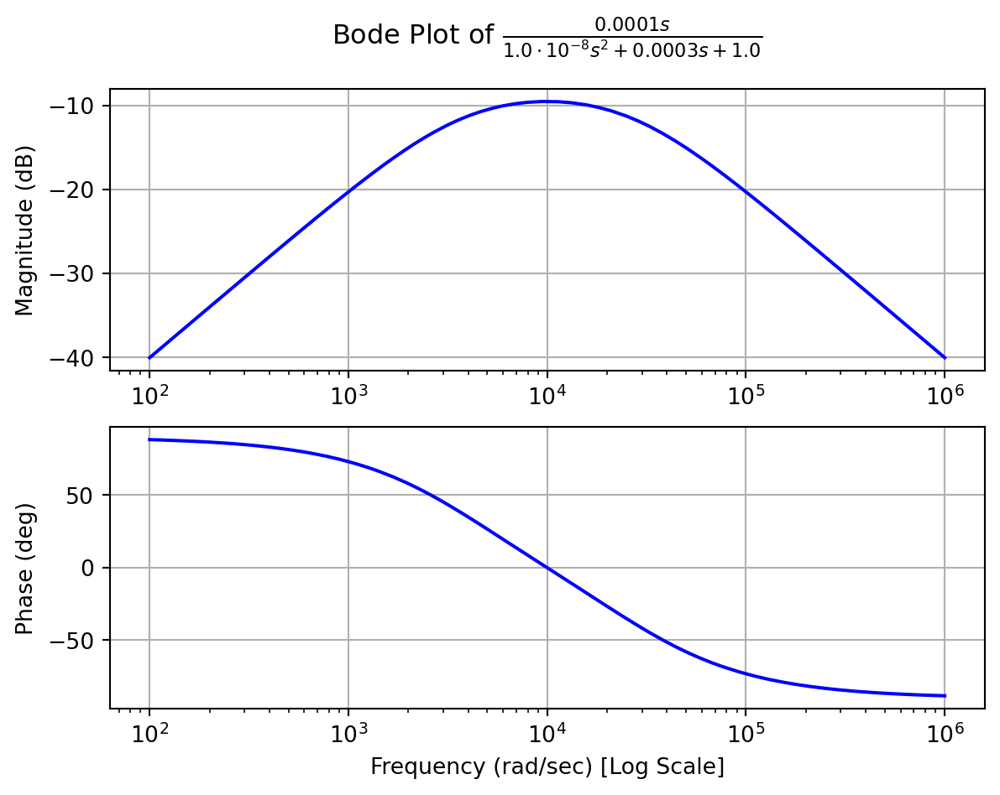

Code
##| echo: false
from sympy import *
from sympy.abc import s
from sympy.physics.control.lti import TransferFunction, Series
from sympy.physics.control.control_plots import step_response_plot, step_response_numerical_data, bode_plot##| echo: false
from sympy import *
from sympy.abc import s
from sympy.physics.control.lti import TransferFunction, Series
from sympy.physics.control.control_plots import step_response_plot, step_response_numerical_data, bode_plot#import sys
# adding Folder_2 to the system path
#sys.path.insert(0, '../../../Common/QuartoBookHelpers')
#import QuartoBookHelpers
from IPython.display import Markdown, Latex
from sympy import *
import sympy.physics.units as u
import numpy as np
from matplotlib import pyplot as plt
from quantiphy import Quantity
import re
class MySymbol(Symbol):
def __new__(cls, name, description='',unit='',value='',**kwargs):
obj = Symbol.__new__(cls, name,**kwargs)
obj.description = description
obj.unit = unit
obj.value = value
return obj
class MyFunction(Function):
def __new__(cls, name, description='',unit='',value=''):
obj = Function.__new__(cls, name)
obj.description = description
obj.unit = unit
obj.value = value
return obj
class QBookHelpers():
def print_description(dic):
for vari in dic:
display(Markdown(f'${latex(vari)}$' + ' ... ' + vari.description))
def print_equation(eq,**kwargs):
#print(kwargs)
if kwargs != {}:
label = kwargs['label']
#print(label)
display(Markdown(f'$$\n{latex(eq)}\n$${{#' + label + f'}}'))
else:
display(Markdown(f'$$\n{latex(eq)}\n$${{#eq-Dummy}}'))
def print_values2(dic,**kwargs):
for vari in dic:
QuantValue = Quantity(vari.value)
#print(QuantValue)
quant_string = QuantValue.render(prec=2)
#print(quant_string)
val = re.split('(\d+)', quant_string)[1]
if re.split('(\d+)', quant_string)[2] == '.':
val = val + re.split('(\d+)', quant_string)[2] + re.split('(\d+)', quant_string)[3]
#print(val)
try:
prefix = re.split('(\d+)', quant_string)[-1]
except:
prefix = ''
#print(prefix)
uni = vari.unit
disp_string = f'$${latex(vari)}' + ' = ' + latex(val) + ' \ ' + latex(prefix) + latex(uni) + f'$$'
display(Markdown(disp_string))
def print_values(dic,**kwargs):
for vari in dic:
try:
QuantValue = Quantity(vari.value,str(vari.unit.abbrev))
except:
QuantValue = Quantity(vari.value)
quant_string = QuantValue.render(prec=2)
val = quant_string.split(' ')[0]
if quant_string[-1].isdigit():
uni = ''
else:
try:
uni = quant_string.split(' ')[1]
except:
uni = quant_string[-1]
#print(re.split('(\d+)',QuantValue.render(prec=2)))
#uni = re.split('(\d+)',QuantValue.render(prec=2))[-1]
#uni = ''
#val = re.split('(\d+)',QuantValue.render(prec=2))[1]
#val = QuantValue.render(prec=2)
if uni.find('ohm') >=0:
uni = '\ \mathrm{' + uni.replace('ohm','\Omega') + '}'
disp_string = f'$${latex(vari)}' + ' = ' + latex(val) + ' ' + str(uni) + f'$$'
else:
disp_string = f'$${latex(vari)}' + ' = ' + latex(val) + ' \ ' + latex(uni) + f'$$'
if kwargs != {}:
label = kwargs['label']
disp_string = disp_string + f'{{#' + label + f'}}'
display(Markdown(disp_string))
#display(Markdown(f'${latex(vari)}$' + ' = ' + str(vari.value) + f'$\ {latex(vari.unit)}$' ))
#display(Markdown(f'${latex(vari)}$' + ' = ' + str("%.2f" % round(vari.value, 2)) + f'$\ {latex(vari.unit)}$' ))
#display(Markdown(f'$${latex(vari)}' + ' = ' + latex(QuantValue.render()) + f'$$' ))
#display(Markdown(f'$${latex(vari)}' + ' = ' + latex(quant) + f'$$' ))
#display(Markdown(f'$${latex(vari)}' + ' = ' + str(vari.value) + f'\ {latex(vari.unit)}$$' ))
def calculate_num_value(eqn):
replacement = {}
for sym in eqn.rhs.free_symbols:
try:
case = {sym:sym.value}
replacement.update(case)
except:
pass
print(replacement)
#return Eq(eqn.lhs,eqn.rhs.evalf(subs=replacement))
eqn.lhs.value = eqn.rhs.evalf(subs=replacement)
#display(eqn.lhs.value)
def replace_num_value(eqn):
replacement = {}
for sym in eqn.rhs.free_symbols:
try:
case = {sym:sym.value}
replacement.update(case)
except:
pass
#print(replacement)
eqn = Eq(eqn.lhs,eqn.rhs.evalf(subs=replacement))
return eqn
def logic_parser(eqn):
return str(eqn).replace('&','and').replace('|','or').replace('~','not')Oszillatoren werden für folgende Anwendungen benötigt:
Und viele weitere Anwendungen. Oszillatorschaltungen sind damit grundlegende Schaltungen der Elektronik.
Schwingkreis Ein Schwingkreis ist ein physikalisches System, das eine periodische Schwingung erzeugt. Ein Schwingkreis benötigt mindestens zwei Energiespeicher, um Schwingfähig zu sein. Die Energiespeicher können Kondensatoren oder Spulen sein aber auch ein mechanisches System wie ein Pendel bestehend aus einer Feder und einem Gewicht.
Oszillator Ein Oszillator ist eine elektronische Schaltung, die aus einem Schwingkreis und einer Verstärkerschaltung besteht und den Zweck hat eine periodische Spannung zu erzeugen.
Ein System ist schwingfähig, wenn es mindestens zwei Energiespeicher enthält. Zum Beispiel zwei Kondensatoren oder einen Kondensator und eine Spule.
Es gibt verschiedene Arten von Oszillatorschaltungen, die auf unterschiedlichen Prinzipien basieren. Die häufigsten Typen sind:
* LC-Oszillatoren
* RC-Oszillatoren
* Kristalloszillatoren
* Relaxationsoszillatoren
* MEMS-Oszillatoren
* Phasenverschobene Oszillatoren
Jeder dieser Oszillatoren hat seine eigenen Vor- und Nachteile und wird für spezifische Anwendungen eingesetzt. In diesem Kapitel werden wir uns auf die RC-Oszillatoren konzentrieren, die auf einem Schwingkreis basieren, der aus Widerständen und Kondensatoren besteht.
Es soll ein Wien-Robinson-Oszillator erarbeitet werden.
Weitere Links zum Thema Altium Designer - Oscillators
Als Blockschaltbild lässt sich ein Oszillator aus zwei Teilen darstellen. Einem Frequenzbestimmendem System, dem Schwingkreis, und einem Verstärker.
Jeder der in Abbildung 6.1 gezeigten Blöcke lässt sich mathematisch beschreiben. Auch das gesamte System lässt sich mathematisch beschreiben.
Mathematisch kann ein Schwingkreis durch eine Differentialgleichung beschrieben werden. Besser eignet sich die Beschreibung durch eine Übertragungsfunktion im Frequenzbereich, die die Beziehung zwischen Eingang und Ausgang des Schwingkreises beschreibt. Die Theorie der Übertragungsfunktionen wird unter anderem in der Regelungstechnik verwendet. Es unterscheidet sich lediglich die Nomenklatur und die Anwendung, die Mathematik ist die gleiche. Weiters ist die Zweitortheorie sehr eng mit der Theorie der Übertragungsfunktionen verwandt. Wer hier die genauen Zusammenhänge verstehen möchte muss sich mit der Laplace-Transformation auseinandersetzen.
Grafisch lässt sich die Übertragungsfunktion mit dem Bode-Diagramm gut Darstellen.
Hier wird die Übertragungsfunktion dazu benutzt die korrekten Bauteilwerte für einen Wien-Robinson-Oszillator zu berechnen.
Für dieses Beispiel wird der Wien-Robinson-Oszillator ausgewählt. Die Schaltung ist in [1] zu finden. Schematisch ist die Schaltung als Blockschaltbild in Abbildung 6.1 dargestellt. Die zwei Blöcke können getrennt betrachtet werden. Der Schwingkreis und der Verstärker.
Übertragungsfunktionen werden im Frequenzbereich betrachtet. das bedeutet, dass unsere Gleichungen nicht von der Zeit abhängen sondern von der Frequenz. Beim Wien-Robinson-Oszillator wird eine Schaltung aus zwei Widerständen und einem Kondensator verwendet, Abbildung 6.2.
Die Übertragungsfunktion lässt sich nun auf zwei Arten darstellen. Entweder mathematisch mittels der Komplexen Wechselstromrechnung oder mittels Simulation.
Die Übertragungsfunktion lässt sich mittels Spannungsteileregel anschreiben.
##| echo: false
Rw1 = MySymbol('Rw1',real=True,positive=True)
Rw2 = MySymbol('Rw2',real=True,positive=True)
Cw1 = MySymbol('Cw1',real=True,positive=True)
Cw2 = MySymbol('Cw2',real=True,positive=True)
Uin = MySymbol('U_{in}',real=True,positive=True)
Uout = MySymbol('U_{out}',real=True,positive=True)
w = MySymbol('w',real=True,positive=True)
Zin = MySymbol('Z_{in}')
Zout = MySymbol('Z_{out}')
Zout = 1/(1/Rw2+I*w*Cw2)
Zin = Zout + Rw1 + 1/(I*w*Cw1)
SpgT_eq = Eq(Uout/Uin, Zout/(Zin))
QBookHelpers.print_equation(SpgT_eq)\[ \frac{U_{out}}{U_{in}} = \frac{1}{\left(i Cw_{2} w + \frac{1}{Rw_{2}}\right) \left(Rw_{1} + \frac{1}{i Cw_{2} w + \frac{1}{Rw_{2}}} - \frac{i}{Cw_{1} w}\right)} \tag{6.1}\]
Werden die zwei Widerstände und die zwei Kondensatoren als gleich angenommen, also \(Rw1=Rw2=R\) und \(Cw1=Cw2=C\) ergibt sich folgende Vereinfachung.
\[ \frac{U_{out}}{U_{in}} = \frac{i C R w}{- C^{2} R^{2} w^{2} + 3 i C R w + 1} \tag{6.2}\]
Bei der Schwingfrequenz des Oszillators handelt es sich um die Eigenfrequenz des Schwingkreises. Bei der Schwingfrequenz ist der Imaginärteil Null. Das lässt sich benutzen um die Eigenfrequenz zu berechnen. Ist der Zähler rein real, erfordert ein erweitern der obigen Gleichung mit \(i/i\), kann nur der Imaginärteil des Nenners betrachtet werden.
\[ im(Nenner) = - C^{2} R^{2} w^{2} + 1 \tag{6.3}\]
Wird die Gleichung nach \(\omega\) aufgelöst ergibt sich die Gleichung für die Eigenfrequenz \(\omega_0\) des Schwingkreises.
\[ w_{0} = \frac{1}{C R} \tag{6.4}\]
Mit den Zahlenwerten für die Bauteile ergibt sich folgender Wert für die Eigenfrequenz des Schwingkreises.
\[R = \mathtt{\text{1}} \ \mathtt{\text{k}}\Omega\]
\[C = \mathtt{\text{100}} \ \mathtt{\text{n}}\text{F}\]
\[w_{0} = \mathtt{\text{10}} \ \mathtt{\text{k}}\frac{\text{rad}}{\text{s}}\]
\[ f_{0} = \frac{w_{0}}{2 \pi} \tag{6.5}\]
\[f_{0} = \mathtt{\text{1.59}} \ \mathtt{\text{kHz}}\]
Wird \(i \omega\) mit \(s\) ersetzt ergibt sich die Übertragungsfunktion des Schwingkreises in Laplace-Form. Damit kann die Übertragungsfunktion des gesamten Systems berechnet werden und der Bode-Plot erstellt werden.
\[ H_{1} = \frac{C R s}{C^{2} R^{2} s^{2} + 3 C R s + 1} \tag{6.6}\]

Im Bodediagramm ist die Eigenfrequenz an Punkt der größten Verstärkung zu sehen. Da bei \(\omega = \omega_0\) gilt, dass der Imaginärteil Null ist muss bei der Eigenfrequenz auch die Phasenverschiebung Null sein. Damit ist aus dem Bodediagramm die Eigenfrequenz abzulesen. Es ist zu erkennen, dass die Eigenfrequenz des Schwingkreises beim berechneten Wert liegt.
Mittels AC-Analysis kann die Übertragungsfunktion des Schwingkreises simuliert werden. Die Simulationseinstellungen richten sich nach der erwarteten Frequenz des Schwingkreises. Die Simulationseinstellungen für oben gewählte Werte
.PLOT AC {MAG(v(uout)/v(uin))} =PLOT(1) =AXIS(1)
.PLOT AC {PHASE(v(uout)/v(uin))} =PLOT(1) =AXIS(2)
*Selected Circuit Analyses:
.AC DEC 10 10 10meg| Wave Name | X | Y |
|---|---|---|
| MAG(v(uout)/v(uin)) | 1,5816 kHz | 333,30 m |
| PHASE(v(uout)/v(uin)) | 1,5915 kHz | -13,239 f° |
Um die Ergebnisse vergleichen zu können muss von der Frequenz auf die Kreisfrequenz umgerechnet werden.
\[ w_{0sim} = 2 f_{0sim} \pi \tag{6.7}\]
\[f_{0sim} = \mathtt{\text{1.59}} \ \mathtt{\text{k}}\text{Hz}\]
\[w_{0sim} = \mathtt{\text{10}} \ \mathtt{\text{k}}\frac{\text{rad}}{\text{s}}\]
Das Simulationsergebnis stimmt mit dem berechneten Wert aus Kapitel 6.2.1.1 überein.